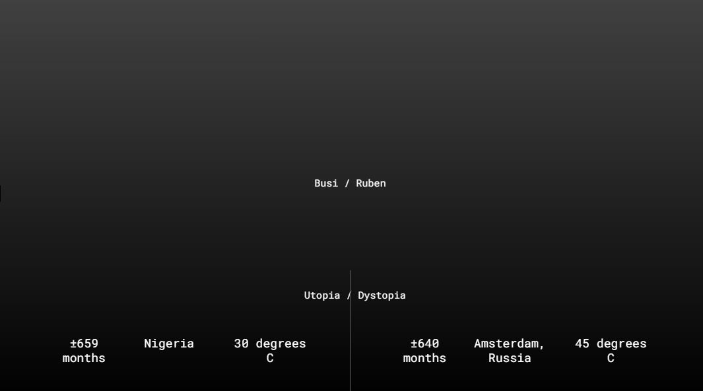
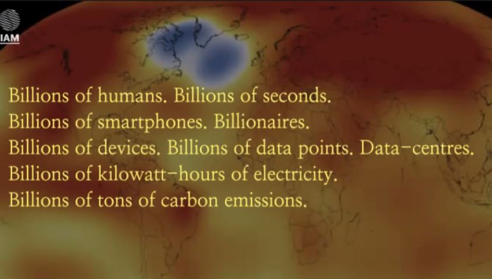

Term 2 Introduction to Future Talks
Introduction: How can I apply for the Future Talks seminars? After being back from the holidays, we gathered as a class to reflect that the previous semester was about exploring and positioning ourselves and the group interventions and what resonates with me. The faculty of the design studio encouraged us to deepen within the context of the community I would like to work in and use the Future Talks seminars as a reflection and inspiration to who I want to be in the future. This blog post summaries and notes the main takeaways of each Future Talks class, listing how I want to apply the talk in my design practice, drawings and the five Fs of active reviewing by The University of Edinburgh. ( Facts, Feelings, Findings, Future)
10.01.2022 Audrey Desjardins - The practice of First person perspective research
What is Authoethnography?
It is a Computation with physical forms and interfaces (interaction design) using design to interrogate systems - designing to articulate questions to propose alternative A social science branch using first person methods, designing for yourself drawing design research drawing on extensive genuine usage Acknowledges and accommodates emotions and researcher’s influence, not hiding the researcher’s bias not assuming it doesn’t exist. We should not assume that or objectivity does not exist
What are tools for autoethnography for designers?
Tools should pool apart and create a thick personal and interpersonal experiences Fairness can also link to ethics, we make assumptions as designers, and with autoethnography we give way to understand what works and what does not through your own usage.
How does Autoethnographic design look like?
Applying this in my MDEF journey and my personal design process, Audrey helped us understand this has to have the genuine needs to design it for yourself , process of methodological approach thinking what data can I collect? - IT IS A SLOW ONGOING PROCESS, where you have a dance between the object shaping you and you shaping the object. Consistently working, growing uniqueness. Thinking about the dance between designing for specific people and embracing complexity, constantly adapting and growing.
Here are tools to document autoethnography:
Research through Design : How to archive and and document RtD The act of research in comparing and contrasting research done on yourself with others Archive of details to make sense of the utility you have. Through Social Media Unstaged photos, take many many photos Taking Notes and listing helps with debugging so you know exactly what's going on A legend / diary that you make that's fun and easy Internet of things, multiple roles and reporting Retrospective accounts with documenting the on-going Feelings I would like to apply to my design practise: Check in with yourself and others Set a time-frame but also be flexible (things happen) Commit to documenting, choose a form you enjoy, and find a way for dialogical exchange (what do you keep personal, hat do you share) You will wear many hats, Find co-conspirators and talk to others Our bodies are our research instruments ( positionality, etc)
I understand it in 2 fold: a way of understanding and navigating space and time as humans ,making meaning of existential ideas. Also as a matrix of possibilities, from actions and choices. In this sense we can see design as a choice and an action to add into the body of the possible futures.
Plural cosmologies - everything is physical bodies and abstract objects, it is without limits and refers to anything. Everything includes perceptions. The everything manifesto is about designing for systemic change and not solutions,
Digitalisiation comes from our hands, using our fingers to count. But how big is a billion? ( one million million) - depending on the political dimensions, understanding that numbers are a technology as well, we use them in the process of making decisions. How much? Different context will give different meanings to the phrase a billion ( depends who is looking and the dimensions taken into account) In coming to terms how big a billion is, we continued the conversation to how extensive billionaires are, and how they are actually a malignant anomaly. But what about big data? I came to understand that data used in connections, patterns and algorithms designed in the interest of politics, perpetuates data extractions, usage of products, where the actual meaning and quantity of things is misleading. The meaning and semantics of matter is important.
Design is a TOOL.“Design is a a decision making practice. A verb. The language of understanding and describing life , and framing a problem in a right way. Why do words matter? - Properly frame and see things in another perspective. Thinking of the digital economy, using active users. “
We were tasked to design a city existing in a billion seconds from now. Our group chose Jakarta, as its a city likely to be sinking in the close future due to rising sea levels. The first task was to take into consideration the IPCC report, temperature and climate that our city would be functioning in. We decided the new city titled Jxkxrtx, will have city citizens located all over the world, where a sense of togetherness is propagated through the metaverse. Using the GPT3 AI text generator , we promoted responses for our non-human mayor in topics of migration, data governance, wealth concentration, nightlife and water.
created with
Website Builder Software .